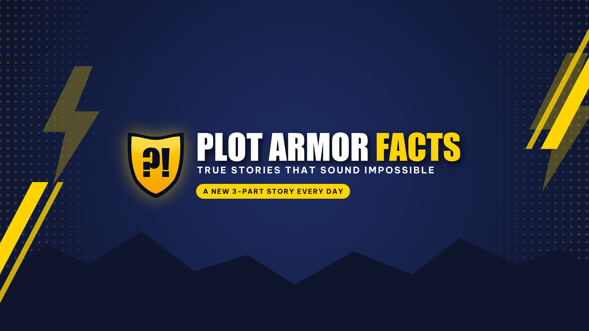

True stories so wild they sound made up.
Plot Armor Facts is a YouTube Shorts channel. Every day it tells one incredible true story in three short parts: survival against impossible odds, animals that break the rules, history's strangest twists and the real stories behind famous movies.
Researched first
Every series is written from reliable sources, and the sources are listed in each video's description.
Three parts a day
Part 1 in the morning, Part 2 in the afternoon and Part 3 at night, each ending on a cliffhanger.
Honest production
Narration is AI-assisted and marked as altered content on YouTube. Footage comes from Pexels.
About the Plot Armor Facts uploader
The Plot Armor Facts uploader is a private tool used only by the channel owner. It renders each day's narrated videos from pre-written scripts and uploads them to the owner's own YouTube channel through the YouTube Data API, scheduling each one to publish at its time slot.
- It asks Google only for permission to upload videos (
youtube.upload) to the channel owner's account. - It is not offered to the public, has no user accounts, and never accesses anyone else's YouTube or Google data.
- Read how data is handled in the privacy policy.
Owner tools: content calendar · automation status & retry · source code